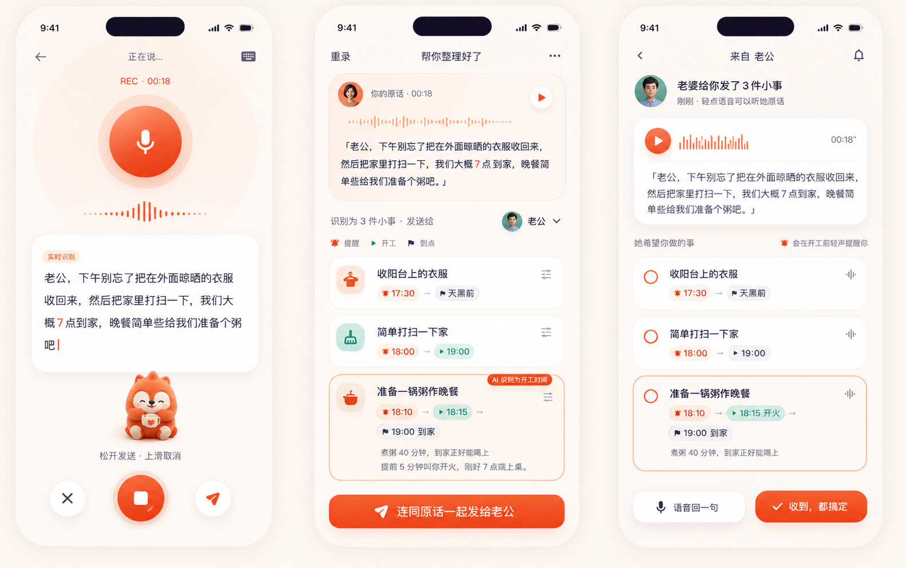
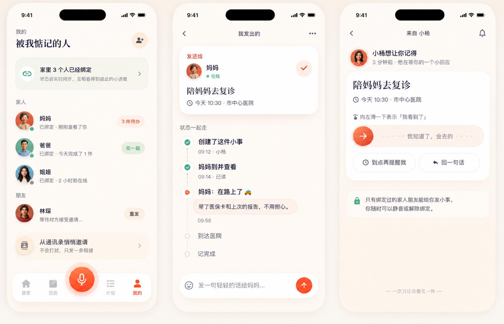
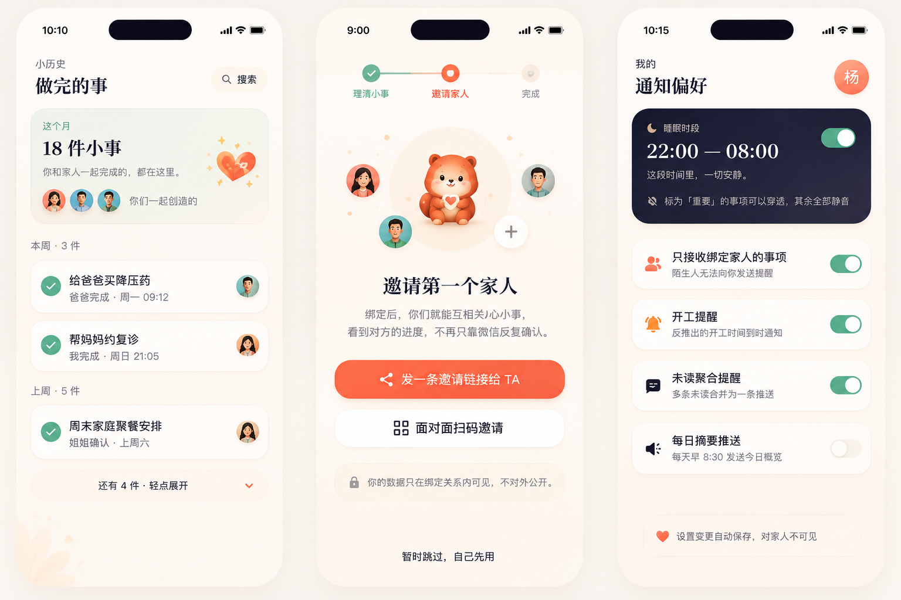
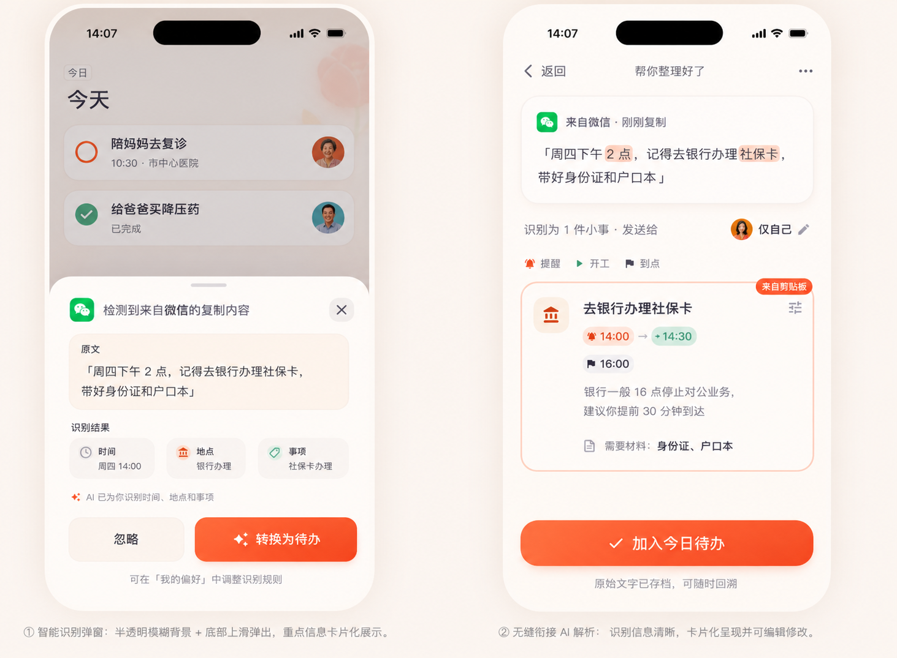

说一句话，
就把一整段牵挂交给对方。
Nudge 以 语音为主、文字为辅。你像平时说话一样告诉它 「老公，下午把外面的衣服收回来，打扫一下家，我们 7 点到家，准备个粥就行」—— 它会自动拆成三件小事、标好时间，同时保留你的原话发给对方，既省力，也不会误解。
今日一览 · 文字输入作为次要方式
同流程 · 新版视觉方案
① 今日首页：每个待办都有「人」的温度，状态在双方之间实时流动。
② 创建：自然语言识别相关人 + 常用联系人头像一键替换，没有弹窗、没有列表。
要不要提前一晚先提醒你？
③ 提前提醒：不是冷冰冰的开关，而是一句被情境触发的轻问。
长按麦克风 · 能量条计时 · 小念趴耳收听
长按底部麦克风，按钮上方浮现「滑到此处取消发送」提示；提示上方出现 能量进度条，随录音时长逐步充满（上限 60 秒）；小念形象 趴在进度条上沿捂耳收听，随能量蓄积表情愈发专注。到 60 秒自动发送，上滑随时取消。
同流程 · 新版视觉方案
① 长按麦克风——能量条刚亮起，小念趴上来侧耳准备收听。
② 录音进行中——能量条充至 38%，小念安心趴耳，表情自在专注。
③ 能量蓄积至 68%——小念精神饱满，耳朵竖起，表情更加专注投入。
说一句话 · 一整段牵挂被拆成小事
语音是 Nudge 的主入口。你不需要像写清单那样一条一条敲 —— 就像平时对家人说话那样念一遍， 它会自动识别「对方」「每一件事」以及三种时间：提醒 · 开工 · 到点， 并把你的原话以语音气泡的形式一并发过去，既省力，也不会误解。
同流程 · 新版视觉方案
① 按住麦克风说话：实时转写 + 波形反馈，像发一条语音消息那样轻松。
② AI 拆成 3 件小事，每件都带「提醒 → 开工 → 到点」三段时间；煮粥自动反推出开工点。
③ 对方收到：上方是你的原话语音（可播放 + 转写），下方是结构化任务。

绑定关系 · 待办在双方之间流动
同流程 · 新版视觉方案
④ 联系人：一次绑定，在线状态、互相可见的待办数量都在。
⑤ 创建者视角：看到的不是「已发送/已送达」，而是彼此的进度和心意。
⑥ 执行者视角：一次只出现一件，滑一下就能回应，不用打字。

动态收件箱 · 重复任务 · 周历视图
同流程 · 新版视觉方案
④ 收件箱：未读用左侧珊瑚竖线标出，状态更新（完成/查看/回复）都汇集于此。
⑤ 重复任务：语音里说「每周五」自动识别周期，周历小条直观展示落点。
⑥ 周视图：横条日期选择，彩点表示当日有任务，重复任务用绿色 repeat 图标区分。
完成归档 · 新手引导 · 通知偏好
同流程 · 新版视觉方案
⑦ 完成归档：不只是划掉，而是你们一起创造的小历史，带人名带时间。
⑧ 新手引导：第三步就是邀请家人，步骤条清晰，两种入口 + 隐私说明 + 可跳过。
⑨ 通知偏好：黑底「睡眠时段」卡最醒目，「重要可穿透」兜底，其余 toggle 默认理性。

桌面小组件 · 双方今日共享视图
复诊
从微信复制 · 打开即转待办
在微信、短信、备忘录等任意 App 里复制一段文字，切换到 Nudge 时自动检测剪贴板， 底部弹出确认卡片，一键衔接到 AI 解析流程，无需任何手动粘贴操作。
同流程 · 新版视觉方案
① 打开 App 即检测剪贴板，底部弹起确认卡，来源 App 图标一目了然。
② 无缝衔接 AI 解析：时间、地点、随身物品一并提取，高亮标注原文出处。

一份克制的设计语言
- looks_one让人先被看见，再被安排
- looks_two一次只问一句，不叠加设置
- looks_3默认安静，必要时才开口
是帮你被人记得的 app。」